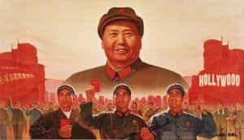

Quintus can be found at qcurtius.com. He is the author of the books On Duties, Thirty Seven, Sallust: The Conspiracy Of Catiline And The War Of Jugurtha, and other books. His work has been reviewed at Taki's Magazine. He can be followed on Twitter


Early in 2016, the Australian media was being driven into hysterical fits of rage that a random US blogger named Roosh Valizadeh might set foot in their country and have a few beers with his friends. His obviously deviant and dangerous ideas (i.e., traditional gender roles, nationalism, and masculinity) were presented as a threat to the safety of the entire country, and even the world. Groveling, simpering Australian officials wasted no time assuring their constituencies that they were prepared to face this threat by mobilizing their navy against the evil pub-crawler.
So at least we know Australian leaders are vigilant in defense of their county’s interests. We are comforted by that, and grateful for their brave stand.
This was why I was so surprised to learn recently that the Australian media had signed on May 26, 2016 a series of six important media deals with the Chinese Ministry of Propaganda. The deals were signed in Sydney, and involved Liu Qibao, Head of the Central Propaganda Bureau of the Chinese Communist Party (CCP). Liu, one of the most powerful Communist cadres outside of the Chinese Politburo, actually arrived in person to attend the signing. Also present was Gary Quinlan, Acting Secretary of the Department of Foreign Affairs and Trade.
I wonder what this could be all about? So I searched Australian media outlets to see if I could find any more details about it. After all, something this important merited at least some sort of story, right? I mean, if they can mobilize armies screaming social justice warriors over a random American who has written some “offensive” things, surely they should be able to inform the Australian people about something that directly affects the integrity and impartiality of Australian journalism, right?

But guess what? I couldn’t find anything. Not a word. Not even a whisper in the mainstream Australian press. There must have been some unfortunate mistake. Of that I’m sure. Media elites would never seek to hide the truth, bury important stories, or omit critical information. I tried to contact a few journalists, but forgot that over 100 employees from Fairfax had been fired right before the China deal was signed. But I’m sure that’s only a coincidence.
Who I am I to judge? After all, I’m just an uninformed American. I’m sure the story’s absence was not because Australian media is being sold out to Chinese money. I’m sure that Australian journalism has not degenerated into being a pack of lazy, lying, chickenshits. Of that I am certain. No, the answers must lie elsewhere.
And so I did some more checking on the specifics of the agreement. Of course, since the Australian media was blacked out about the news, I had to read about it elsewhere. The six agreements involved (on the Chinese side) the Xinhua News Agency, China Daily, China Radio International, People’s Daily Website, and Qingdao Publishing Group, and (on the Australian side) Fairfax Media, Sky News Australia, Global China-Australia Media Group, Weldon International, and Bob Carr’s Australia-China Relations Institute at the University of Technology, Sydney.
Xinhua, soon after the signing of the deals, gushed in its editorials that the new agreements would usher in a new era of regional understanding and cooperation. This is the public rhetoric. The reality, of course, is that China will now be able to funnel money and influence to the Australian media market, permanently affecting its impartiality and integrity. As if to underscore this point, the China Daily ran a story in Australia right after the media deal explaining—in serious tones—that claims of the Philippines in the South China Sea were without any merit. It was not made clear that the story was being paid for the Propaganda Bureau of the Chinese Communist Party.
In a nutshell, the deal with allow China to plant propaganda stories in Australian media outlets and pass them off as news. But I’m sure that the informed, educated public will be able to distinguish propaganda from truth. I mean, they saw through the lies about Roosh, right?
Oh, well… maybe that’s a bad example.
![epa05008469 China's President Xi Jinping attends a meeting of the second Understanding China Conference, in Beijing, China, 03 November 2015. EPA/JASON LEE / POOL (Newscom TagID: epalive891262.jpg) [Photo via Newscom]](wp-content/uploads/2016/06/media3-300x156.jpg)
I dug a little deeper. I could see that Australia has, at least on paper, a tradition of separating editorial from commercial journalism. But I’m sure that huge amounts of Chinese money pouring into the Australian market will have no effect on the objectivity, integrity and quality of Australian journalism. It’s just money, right? I’m sure that Australian journalists (what few of them are left) will be able to maintain their integrity.
I’m also sure that the fact that China practices a rigorous censorship of its media at home will have no bearing—no bearing at all!—on how it conducts itself in Australia. I mean, it’s totally irrelevant that certain topics (the Panama Papers, freedom of speech, freedom of the press, civil liberties) are forbidden in China.
Who am I to question things? Fairfax tells us that it’s all just a “commercial printing agreement.” What could possibly go wrong when one economic giant dumps tons of money and resources on a much smaller neighbor? What could possibly go wrong when a totalitarian dictatorship with zero respect for freedom of speech comes into contact with a country that (in theory) values British Commonwealth notions of freedom of speech? No chance, no chance at all, for any corruption of journalistic integrity here, people.
I’m sure the Chinese Propaganda Ministry will be on its best behavior in Sydney and Canberra. I’m just positive that they have no intention to sway domestic opinion by planting (sorry, I mean “running”) stories in the local media. I’m convinced that China is not trying to push its “soft power” all around the world. It’s just a coincidence that they are all over Africa, South America, and Europe.
There is just no way—no way—that Australia is playing into Beijing’s grand strategy of buying up or influencing media outlets around the world.
I mean, after all, the valiant Australian media protected its people from an obscure American dude with a beard who writes about sex and culture on his blog.
I am fully confident in their competence and priorities. And you should be also.
Read More: 5 Reasons Girls Fake Mental Illness